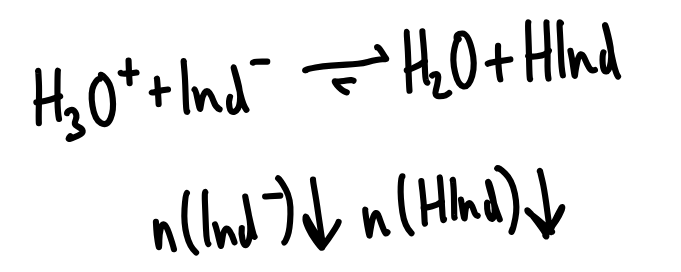

Hydronium-Ionen lassen sich durch Indikatoren nachweisen. Die Hydronium-Ionen verschieben dabei das Protolysegleichgewicht zwischen Indikator-Base und Indikator-Säure nach le chatelier:

Die Konzentration der Indikator-Säure steigt, was zu eine charakteristischen Farbänderung der Lösung führt.